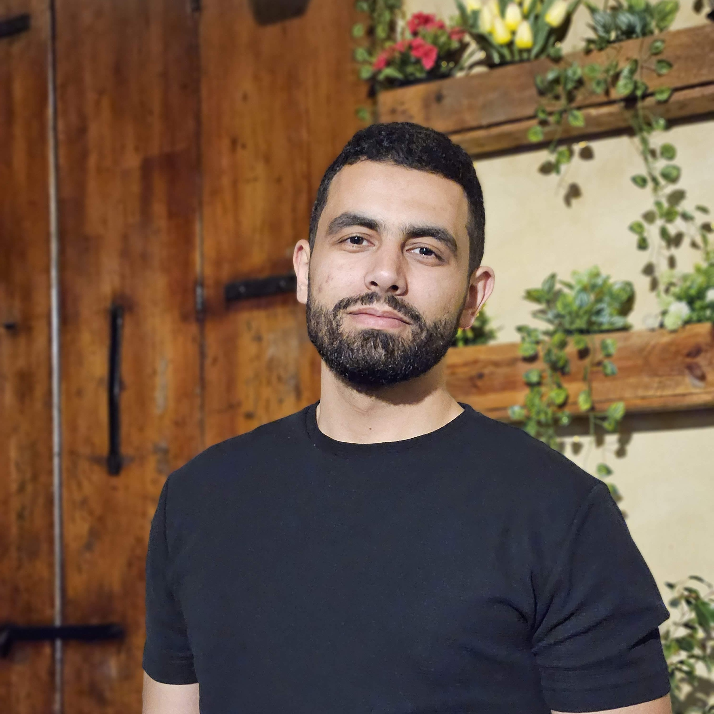

Osama Radwan
Passionate Software Engineer | Data Analyst
Technical Solution Engineer at
Monty Mobile.
üìß osamaradwan46@gmail.com
Profile
Driven by a deep passion for software engineering and data analysis, I
am a highly skilled and motivated professional dedicated to building
exceptional software products that push the boundaries of innovation.
With 4 years of experience in the tech industry, I have honed my
expertise in developing cutting-edge solutions and optimizing
data-driven strategies to deliver outstanding results.
PROFESSIONAL EXPERIENCE
Solution Engineer
Monty Mobile, Beirut, Lebanon
05/2021 - Present
Monty Mobile is a VAS & telecom solutions provider , working to
facilitate the international flow of Voice and SMS across global
markets.
Achievements/Tasks:
Back-end Developer
-
Involved in the complete life cycle including analysis, design, development, code review and testing for various projects.
- Implementation and maintenance of multiple projects provided by Business Analysis team (Front-end and Back-end).
- Understand and discuss user requirements in order to map them into project tasks.
- Design overall software architecture of requested projects.
- Coordinate tasks among team members and follow up on planning.
- Built an automated software application that reads data in Excel sheets, cleans and modifies the data to populate them into one unified relational MySQL Database Schema.
Data Analyst
- Using automated tools to extract data from sources and populating them into our database.
- Developing and maintaining databases, and data systems – reorganizing data in a readable format.
- Removing corrupted data updating the database with the newest data when available.
- Providing the concerned departments with data when needed.
Backend Developer - Mobile Developer
MMServices, Saida, Lebanon
08/2018 - Present
An Android application for mobile store dealers in the Lebanese
market which sells mobile recharge cards, units, and online gift
cards.
Achievements/Tasks:
-
Worked on the backend of the MMServices application server that
handles the operations for sending dollars and days to touch and
alfa mobile numbers from the MMService application.
-
Built an Android mobile application that shows the prices of
phones available in the Lebanese market and allows the user to
order through WhatsApp.
Full-Stack Web Developer
Lebanon Field Office - UNRWA, Beirut, Lebanon
09/2019 - 03/2020
United Nations Relief and Works Agency for Palestine Refugees in the
Near East.
Achievements/Tasks:
-
Worked on a web application project that manages flight and hotel
reservations for UNRWA staff using ASP.NET (Entity Framework).
-
Worked on quality assurance for the E-Health web application used
by the UNRWA Health Department.
Full-Stack Web Developer Bootcamp
SE Factory, Beirut, Lebanon
05/2018 - 10/2018
Intensive full stack web development program covering cloud
architecture, front and back-end development, source control, and
web application security.
Achievements/Tasks:
-
Ran through programming fundementals like data structures,
algorithms, object oriented programming, programming language
concepts, etc...
-
Developed knowledge in back-end web development by working on
small projects using Laravel (PHP).
-
Learned non-technical soft skills (communication skills, time
management, creative thinking, team work, conflict resolution,
presentation, business etiquette, project management, leadership,
and personal finance ).
Back-End Web Developer Intern
Lebanon Field Office - UNRWA, Beirut, Lebanon
12/2017 - 05/2018
United Nations Relief and Works Agency for Palestine Refugees in the
Near East.
Achievements/Tasks:
- Developed knowledge in back-end web development using PHP.
- Responsible for the implementation of a registration system for schools using PHP, MySQL, and Apache.
- Worked on the design and implementation of responsive user interface using HTML5, CSS3 and Bootstrap.
EDUCATION
Bachelor in Computer Science
Beirut Arab University, Beirut, Lebanon
2014 - 2017
SKILLS
Front-end Web Development: HTML/CSS3, Bootstrap, JavaScript, Angular, React
Back-end Web Development: NodeJS, ExpressJS, Laravel, ASP.NET Core, Web APIs, Django, Python, PHP, Java, JavaScript, C#
Version Control: GIT, Github
Database: MySQL, PostgreSQL, DataGrip
Mobile Development: Flutter, Dart
Operating Systems: Linux Ubuntu, Linux Mint, Windows
MS Office: Visio, Excel, PowerPoint etc…